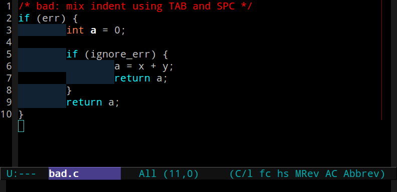
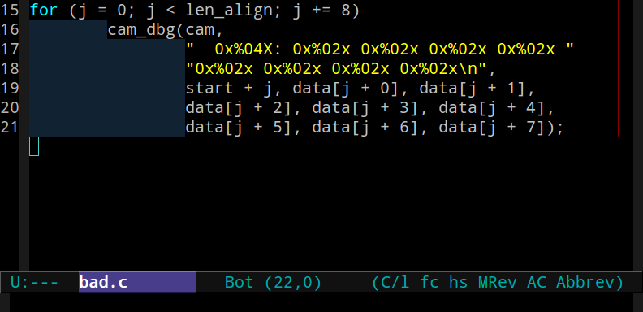
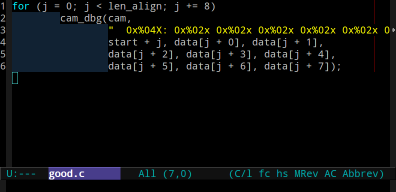
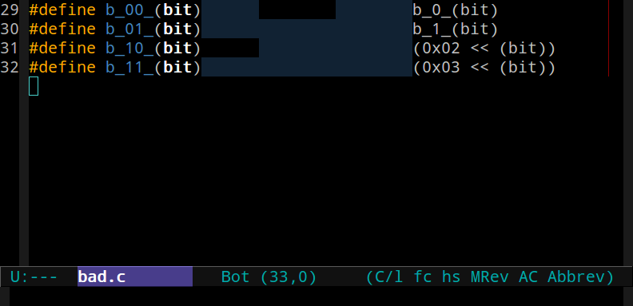
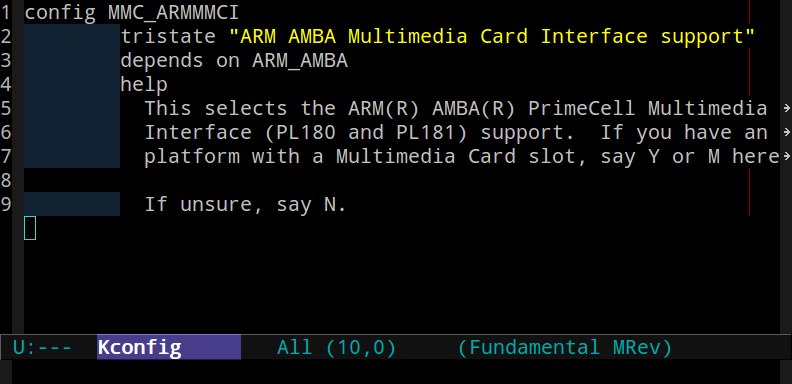
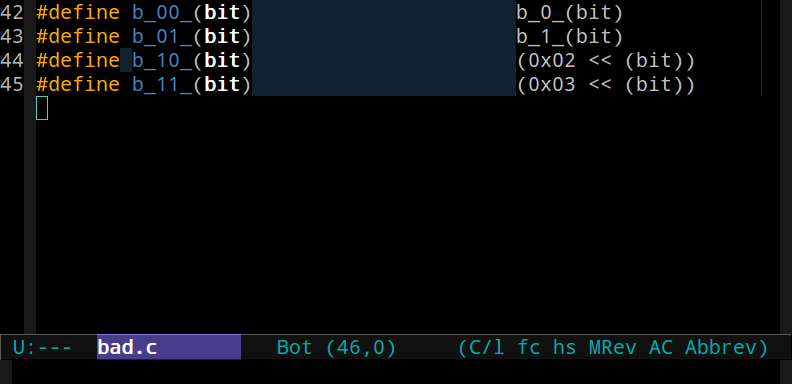
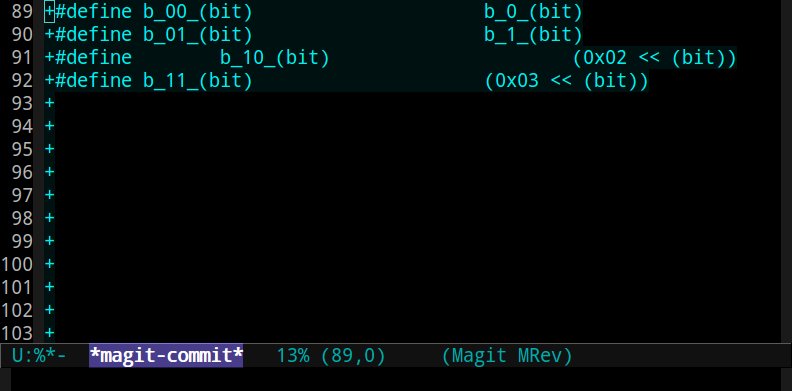
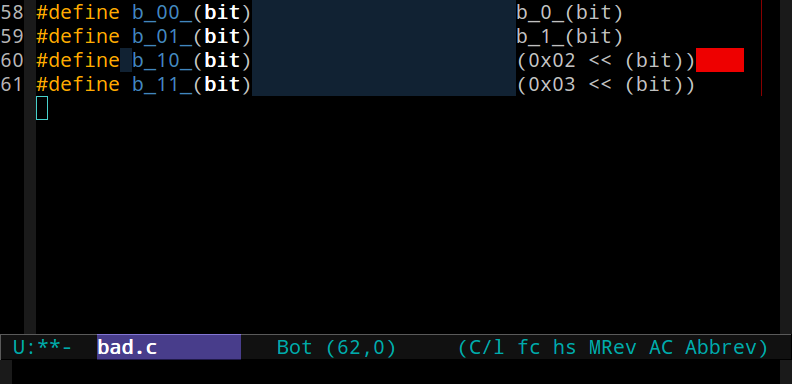
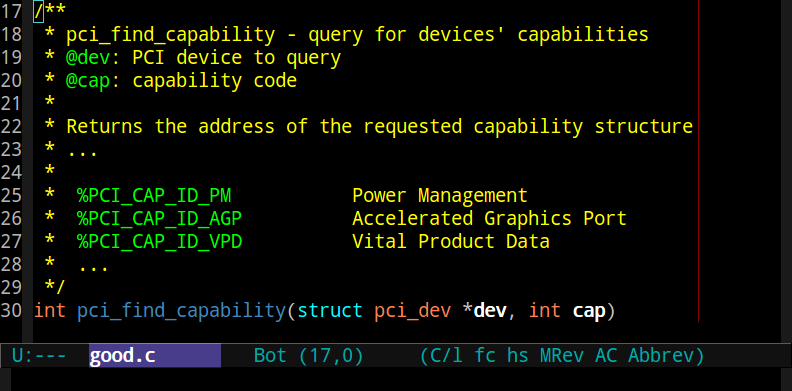
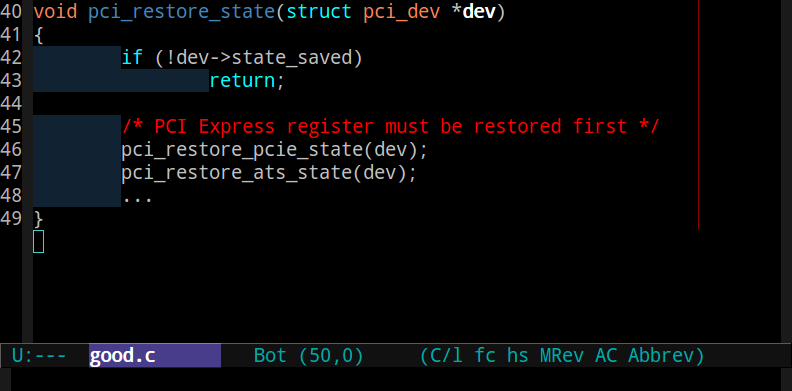

Linux Kernel Coding-style Introduction
Table of Contents
1 内核编码规范
1.1 引言
1.1.1 引言
First off, I'd suggest printing out a copy of the GNU coding standards, and NOT read it. Burn them, it's a great symbolic gesture.
1.2 缩进与空白
1.2.1 使用TAB缩进
- 仅使用TAB缩进
- 不要使用SPC缩进、也不要使用TAB和SPC混合缩进
- 只有注释、文档和Kconfig可使用SPC缩进 
1.2.2 代码长度不要超过80列
- TAB显示宽度为8个字符，不要设置为4个甚至2个字符
- 超过80列的行需要折断
- 折断产生的新行至少应该保持一个缩进深度
- 不要折断字符串等打印信息 
1.2.3 代码长度不要超过80列
- 正确做法是不折断打印信息 
1.2.4 标签的缩进
- switch语句中的case关键字应对齐到switch关键字
- goto语句中用到的标签不应该有缩进
switch (suffix) { case 'g': mem <<= 30; goto change_status; case 'k': mem <<= 10; /* fall through */ default: break; } change_status: make_power_off();
1.2.5 使用TAB进行对齐
- 对齐的填充符至少应该保持统一，推荐仅采用TAB
- 不要混合使用TAB和SPC作为填充符对齐 
1.2.6 Kconfig文件中的缩进
- Kconfig使用一个TAB缩进，help文档需要缩进两个空格 
1.2.7 正确使用空格
- 需要在后面添加空格的关键字
- if switch case for do while define
- 在大多数二元/三元操作符的两侧要使用一个空格
- = + - < > * / % | & ^
==<= >= != ? :
- = + - < > * / % | & ^
- 一元操作符后面不要使用空格
- & * + - ~ ! sizeof typeof alignof \__attribute__ defined
- 自增/自减运算符(++/–)不要和操作变量间使用空格
- 成员操作符(./->)前后不应有空白
1.2.8 正确使用空格
- 不应在小括号内侧靠近括号的地方使用空格
- 指针中的星号应该靠近函数名、变量名，而不是类型名
s = sizeof( struct file ); /* bad */ long *memparse(char *ptr, char **retptr); /* good */
1.2.9 正确使用空格
- 避免在应该使用空格的地方使用TAB
- 如果不显示TAB和SPC的区别在源代码中很可能看不出来
- 但会影响patch效果，如gerrit能够显示TAB和行尾空白

1.2.10 正确使用空格
- 误用TAB导致patch效果变差 
1.2.11 不要在代码中留下行尾空白
- 不要在行尾留下空白符

1.3 名称与注释
1.3.1 取一个好听的名字
- 函数名都是小写，用下划线分割单词
- 不能使用驼峰命名规则
- 局部变量应当短小精干，如"i"比"loop_counter"好用
- 局部变量应在最小作用域定义
- 给含义不是很直白的数字取一个名字
- 谨慎使用typedef定义some_t结构
- 用于隐藏对象，如dma_addr_t，以限定只能调用正确的函数
- 清楚指定整数类型，如u8/u16…
- 在某些时候是"unsigned int"，而某些时候是"unsigned long"
- 函数指针
1.3.2 typedef可能产生的问题
- 隐藏了变量的实际类型，造成阅读困难
- 可能对函数造成的影响
- 在栈上创建了过大的结构
- 在函数返回时传递了一个过大的结构
- 仅用来定义一个指针类型
- 是不是太懒了点？
- 仅用来隐藏struct关键字
- 那么一定要取一个好听的名字
1.3.3 比较糟糕的typedef
- 对每一个struct都用一个typedef去定义
- 只用了typedef，而没有给一个struct取一个名字
typedef struct { __u32 link; __u32 status; __u32 info; __u32 buffer; } uhci_td_t, *puhci_td_t;
1.3.4 使用风格统一的注释
- 不能使用// …风格注释，应使用/* … */
- 多行注释的结束符应该单独放在一行
/* * This is the preferred style for multi-line * comments in the Linux kernel source code. * Please use it consistently. * * Description: A column of asterisks on the left side, * with beginning and ending almost-blank lines. */
1.3.5 使用风格统一的注释
- 注释分文档注释和非文档注释
- 文档注释以/**开头，非文档注释以/*开头
- 参数（成员）用@name标记
- 如果参数是…(varargs)，使用@…表示 
1.3.6 不要使用糟糕的注释
- 糟糕的注释
- 解释代码如何工作
- 说明函数的编写者
- 包含最后更改时间
- 解释一些不关紧要的事情
- 良好的注释
- 告诉你这是什么
- 告诉你为什么要如此
1.3.7 注释也需要缩进
- 如果是函数内部的注释，应当和代码保持同样的缩进 
1.4 函数与结构
1.4.1 让函数变得美观
- 函数的原型应该包含变量名以便阅读
- 函数应该短小精干，只做一件事并将其做好
- 函数的大小尽量控制在50行以内（正常显示屏两屏）
- 一个函数的局部变量应该控制在10个以内
- 函数定义之间应该留有一行空行
- 如果函数需要导出，导出宏需要紧跟函数，不要留空行
int system_is_up(void) { return system_state == SYSTEM_RUNNING; } EXPORT_SYMBOL(system_is_up);
1.4.2 让函数变得美观
- 不要将多个语句（赋值）放于一行，保持代码简洁
- 声明语句之后要加一个空行
if (condition) do_this; /* bad */ do_everytime; static int sdmmc_get_ro(struct mmc_host *mmc) { struct rtsx_ipcam *cam = mmc_priv(mmc); int ro = 0; if (cam->removed) return -ENOMEDIUM; return ro; }
1.4.3 让函数变得小巧而健壮
- 不要定义过长的inline函数，三行以内为宜
- 不要自己发明轮子，使用已经定义良好的函数
- 字符串处理函数
- 字节序相关函数
- 链表
1.4.4 让函数的返回值含义显而易见
- 如果函数是做一件事，成功返回0,失败返回-ECODE
- 如果函数是谓词（predicate）
- 那么成功为true，失败为false
1.4.5 使用括号让代码正确并美观
- 对于if-else语句，只要有一个分支包含多行就要使用括号
- 如果if-else用到大括号，else需要紧跟大括号
- do-while同理
/* 单行分支 */ if (cam->trans_result == TRANS_NODEV) err = -ENODEV; else if (cam->trans_result == TRANS_FAIL) err = -EIO; /* 多行分支 */ if (cam->trans_result == TRANS_NODEV) { err = -ENODEV; } else if (cam->trans_result == TRANS_FAIL) { cam_dbg("transfer failed\n"); err = -EIO; }
1.4.6 使用括号让代码正确并美观
- 语句中的大括号从右侧起始
- 函数中的大括号从下方起始
- 添加必要的小括号以说明优先级
/* * 移位运算高于按位或，但是这给阅读者带来困难 * 并且这会带来编译警告，建议加上括号 */ u32 val = HAIMR_READ | (u32)(addr & 0x3FFF) << 16; /* 添加括号相当于给出注释，阅读更清晰 */ u32 val = HAIMR_READ | ((u32)(addr & 0x3FFF) << 16);
1.4.7 结构初始化
struct resource res[] = { { .start = RTSX_IPCAM_MEM_START, .end = RTSX_IPCAM_MEM_END, .flags = IORESOURCE_MEM, }, { .start = RTSX_IPCAM_IRQ, .end = RTSX_IPCAM_IRQ, .flags = IORESOURCE_IRQ, } };
1.5 宏
1.5.1 正确定义宏
- 单行语句使用括号将宏定义包围
- 对于用到的参数也应该加上括号，return和goto语句除外
#define b_1_(bit) (0x01 << (bit)) #define TRACE_RET(chip, ret) (return ret) /* compile warning */ #define TRACE_RET(chip, ret) (return (ret))
1.5.2 正确定义宏
- 多行语句用do…while(0)形式包围
#define _atomic_spin_lock_irqsave(l,f) do { \ arch_spinlock_t *s = ATOMIC_HASH(l); \ local_irq_save(f); \ arch_spin_lock(s); \ } while(0)
1.5.3 不要在.c文件中使用#ifdef
- #ifdef应该属于.h文件
static void hide_some_dev(struct some_dev *sd) { #ifdef CONFIG_SOME_HIDE if (sd->id == SOME_DEV_ID) do_some_hide(sd->hid); #endif }
1.5.4 不要在.c中使用#ifdef
/* src.h */ #ifdef CONFIG_SOME_HIDE extern void do_some_hide(int hid); #else static inline void do_some_hide(int hid) {} #endif /* src.c */ static void hide_some_dev(struct some_dev *sd) { if (sd->id == SOME_DEV_ID) do_some_hide(sd->hid); }
1.6 小结
1.6.1 小结
- 仔细阅读Documentation/CodingStyle
- 遵照Documentation/CodingStyle写代码
2 实用工具
2.1 Lindent
2.1.1 Lindent基本用法
- 位于scripts/
- 自动修正代码中的缩进
- 不要完全信赖该脚本，修正完成之后最好检查一下
./Lindent <filename>
2.2 sed
2.2.1 去除行尾空白
- 使用sed去除行尾空白只要一行命令
# 去除单个文件的行尾空白 sed --in-place 's/[[:space:]]\+$//' <filename> # 去除所有源代码行尾空白 # 谨慎使用find命令 # 避免删除重要文件的行尾空白，如git仓库里的索引文件 find -name "*.[ch]" | xargs -n 1 sed --in-place \ 's/[[:space:]]\+$//'
2.3 checkpatch.pl
2.3.1 checkpatch.pl帮助信息
- 位于Linux内核树scripts/
./checkpatch.pl -h # 查看帮助信息
Usage: checkpatch.pl [OPTION]... [FILE]... Version: 0.32 Options: --no-tree run without a kernel tree --no-signoff not check 'Signed-off-by' line --terse one line per report -f, --file treat FILE as regular file --fix may create horrible results --fix-inplace may create horrible results
2.3.2 checkpath.pl日常用法
# 对当前目录下所有源代码检查风格 find -name "*.[ch]" | xargs -n 1 ./checkpatch.pl --no-tree -f # 对当前目录下所有源代码修正风格 find -name "*.[ch]" | xargs -n 1 ./checkpatch.pl --no-tree -f \ --fix-inplace # 对所有补丁检查风格 ./checkpatch.pl --no-tree *.patch # 对所有补丁修正风格 ./checkpatch.pl --no-tree --fix-inplace *.patch
2.4 sparse
2.4.1 下载sparse
sparse是由Linus Torvalds针对Linux Kernel写的静态检查脚本
apt-get install sparse # 使用源下载并安装 # 从网站抓取最新源码包 wget http://codemonkey.org.uk/projects/git-snapshots/\ sparse/sparse-latest.tar.xz # 使用git获取最新源码包，推荐使用该方式 git clone http://git.kernel.org/pub/scm/devel/sparse/\ sparse.git
2.4.2 安装sparse
make make install # 默认安装到$(HOME)/bin # 设置搜索路径 echo 'export PATH=$PATH:$HOME/bin/' >> ~/.bashrc which sparse # 查看sparse是否成功安装
2.4.3 sparse帮助信息
man sparse
sparse [WARNING OPTIONS]... file.c -Wsparse-all 打开所有选项
2.4.4 sparse日常用法
make C=2 # C=1仅检查要编译的C文件 make C=2 CF="-D__CHECK_ENDIAN__"
# 可以在Makefile里面设置默认的检查标志 CHECKFLAGS := -D__linux__ -Dlinux -D__STDC__ \ -Dunix -D__unix__ \ -Wbitwise -Wno-return-void $(CF)
2.5 smatch
2.5.1 安装smatch
# 安装软件依赖 sudo apt-get install libsqlite3-dev git clone git://repo.or.cz/smatch.git cd smatch make make install # 默认安装到$(HOME)/bin # 设置搜索路径方法和sparse相同
2.5.2 smatch帮助信息
smatch --help
Usage: smatch [smatch arguments][sparse arguments] file.c --project=<name> or -p=<name>: project specific tests --spammy: print superfluous crap. --info: print info used to fill smatch_data/. --debug: print lots of debug output. --param-mapper: use param_mapper output. --no-data: not use the /smatch_data/ directory. --data=<dir>: overwrite path to default smatch data directory. --full-path: print the full pathname. --debug-implied: print debug output about implications. --no-implied: ignore implications. --assume-loops: assume loops always go through at least once. --known-conditions: dont branch for known conditions. --two-passes: use a two pass system for each function. --file-output: print to "file.c.smatch_out". --help: print this helpful message.
2.5.3 smatch日常用法
- 对于高于2.3.37的内核，需要设置选项
- CONFIG_DYNAMIC_DEBUG=n
# 编译整个内核 make CHECK="smatch -p=kernel" C=1 bzImage modules | \ tee warns.txt # 编译指定模块，如mmc make CHECK="smatch -p=kernel" C=2 M=drivers/mmc | tee warns.txt